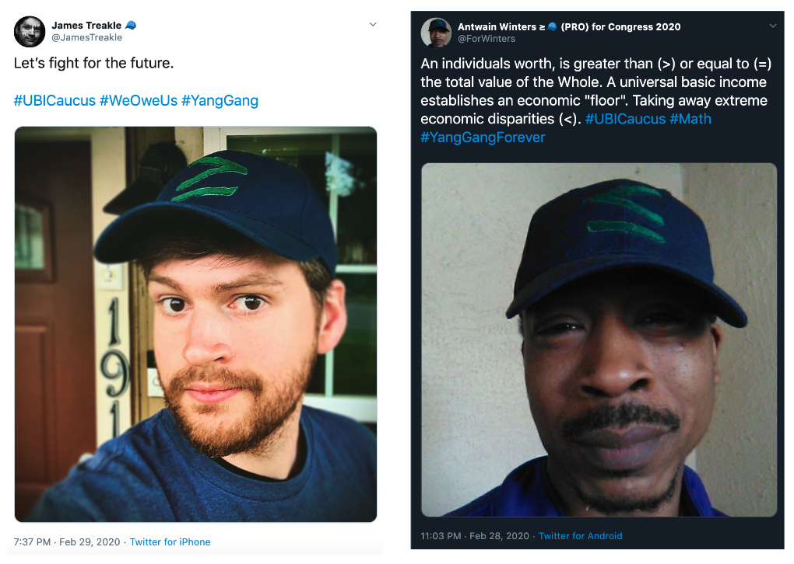

Building a movement
At the center of every infuential movement is a powerful idea. The UBI Caucus was born from the idea that a citizen's income shouldn't be dependent on their economic value because the market doesn't recognize the inherent value in every human being.
The UBI Caucus is a coalition of 40+ candidates of all political affiliations (Democrat, Republican, Libertarian, Independent), united by the idea of Universal Basic Income, running for US Congress. It was founded by Ryan Blevins, a candidate for US House of Reps in CA-10.
Identity branding
The ideas of this movement were compelling, but to maintain and accelerate growth it needed strong identity branding that could unite and energize supporters.
I told the story of the "≥" idea:
Members of the movement started to identify themselves by including the ≥ symbol in their names on social media:
Wear your values
I created a branded merch store so the most dedicated supporters can financially support the movement while literally "wearing their hearts on their sleeves".
